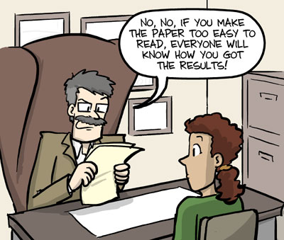
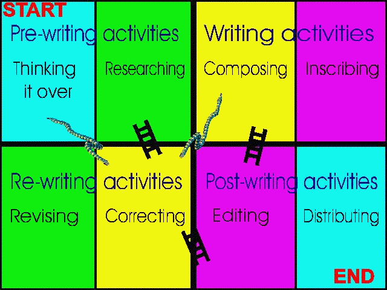
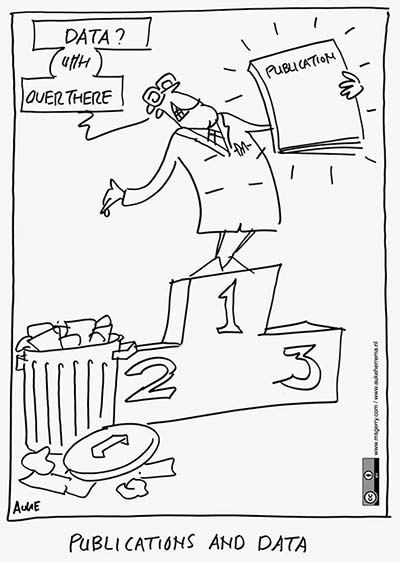

Writing a Scientific Paper
Research Rounds
Created by Tom Wright
Why Write?
“Piled Higher and Deeper” by Jorge Cham
www.phdcomics.com
Why Write?
Communicate your work to other people.
“Many scientific papers fail to usefully communicate research work to their audience. They focus on the authors instead of on the readers by failing to clarify the motivation for the work or by including unnecessary details. Or they try to impress the readers rather than inform them. As a result, they are interesting to or understandable by only a small set of highly specialized readers. Effective scientific papers, in contrast, are interesting and useful to many readers, including newcomers to the field.”
Why Write?
- Writing is satisfying
- Writing clarifies research
- Writing reveals holes
Collaborations...
“Collaborators let down their guards. Successful collaborators still carry a taser.”
Ryan Lilly
Before you start...
- Authors
- Journal
- Tools
Authors
Each author should participate sufficiently to take responsibility for the content.
Authorshop credit should be based only on substantial contributions to:
- Conception and design or analysis and interpretation and
- drafting the article or revising it for important intellectual content and
- final approval of the version to be published and
- Agreement to be accountable for all aspects of the work in ensuring that questions related to the the accuracy and integrity of any part of the work are appropriately investigated and resolved
Non author contributions
Activities that do not qualify for authorship include:
- Acquisition of funding
- General supervision of a research group or general administrative support
- Writing assistance, technical editing, language editing, proofreading
These may be acknowledged "Clinical Investigators" or "Participating Investigators"
Contributions should be specified.
Sickkids Oph. Vis. Sci. recommendations
The principal author sends a memo to all potential authors:
Are you able to take responsibility for the content of this paper?
For at least a specific section did you have input to:
- conception and design, or analysis and interpretation of data
and- were you involved in drafting the article / section of the article or revising it critically for important intellectual content
and- were you involved in the final revision of the version to be published.
Which Journal?
What audience?
Is the paper:
- Review article
- New research
- Case report
- Methods
Impact factor
- ISI Web of knowledge
- CiteFactor.org
Open Access?
Open-access (OA) literature is digital, online, free of charge, and free of most copyright and licensing restrictions.
Required for research funded by:CIHR, NSERC, NIH.
| OA Repositories | OA Journals |
Don't perform peer review May contain unrefereed preprints, refereed postprints, or both. |
Perform peer review Have expenses: peer review, manuscript preparation, server space Many business models: |
|---|
ROARMAP - Database of OA repositories
SHERPA/RoMEO - Database of authors rights by journal
Guidelines for authors
Review the article guidelines:
- abstract format
- figures and tables
- word count
Manage those references
Turn off track changes when modifying references
Writing is an iterative process.
Jean Simard

“Piled Higher and Deeper” by Jorge Cham
www.phdcomics.com
Word
Use track changes but...Keep a master copy.
Dropbox
Keep a local backup.Google docs
Reference management is a problemFeeling brave?
Next generation tools for collaborative writing:The Structure
| Section | Content |
|---|---|
| Abstract | Summary of the paper. |
| Introduction | What is the problem? |
| Materials and Methods | How did I solve the problem? |
| Results | What did I find out? |
| Discussion | What does it mean? |
| Acknowledgements | Who helped me out? |
| Literature Cited | Whose work did I refer to? |
| Appendices (optional) | Extra information |
Abstract
- Format is very journal specific.
- Should include methods and results.
- Should be possible to determine major points just by reading the abstract.
- Write this last.
Introduction
Clarifies the motivation and prepares readers for the structure of the paper.
- Provides context
- Diabetes is a leading cause of blindness...
- Why is this work needed (the task).
- Currently we don't know why...
- What have you done (the object)
- We investigate the effect of...
- End by summarising the purpose of the study.
- This paper summarises the ocular findings from 2000 patients...
Introduction cont..
The first paragraph is essential. Catch the attention of the audience and convey the importance of the work.
The first sentance should be snappy and profound.
Methods
Succincly describe what was done.
If you used standard procedures reference them, explain any deviations.
Justify the statistical methods used.
Explain why you use these methods.
Consider using flow charts, tables etc.
Results
Don't make the reader work through in chronological order. State the important findings first, then use the rest of the paragraph to justify them.
The word significant can only be used when a statistical test was performed.
Discussion / conclusions
Do not restate the results, interpret your findings at a higher level of abstraction.
How did your results compare with expected results?
Discuss any weaknesses, explain why it is not practical to address them.
Show what your findings mean in the broader context, what further predictions can be made?
Tables and Figures
Present information in a format that is easily evaluated by the reader.
Pay attention to axis labels, units etc.
It should be possible to understand a table or figure without referring to the text.
If possible show raw data as well as a summary, e.g. datapoints on a boxplot.
Show error bars (and describe them in the figure legend.
Good writing
Minimize jargon and acronyms.
Be concise, avoid extra words.
| Phrase | Replace |
|---|---|
| In order to... | To |
| The fact that... | delete |
| It is clear that... | Clearly |
| It is evident that... | Evidently |
Past, present, future
Use past tense for results described in the paper.
Use present tense for results from published papers.
Use future tense only for experiments that are planned for the future.
Third vs first person
Use first person sparingly, reserve it's use for special emphasis of things "you" uniquely did.
Use active verbs
Passive verbs: is, was, has, have, had are boring.
active:
Werner Heisenberg formulated the uncertainty principle in 1927.passive:
The uncertainty principle was formulated by Werner Heisenberg in 1927.active:
The mouse consumed oxygen at a higher rate.passive:
Oxygen was consumed by the mouse at a highter rate.Be specific
Take care with pronouns it or they to refer to a previous sentence. If in doubt repeat the target in subsequent sentences.
Abbreviations
Check the journal style guide.
Use standard abbreviations, (hr, min, sec, mm, l etc.)
Define abbreviations first time they are used. If a paragraph is too heavy with abbreviations consider rewriting.
Don't use abbreviations for terms mentioned less than 3 times.
Plagiarism
The use of others words, ideas, images etc. without citation.
Paraphrasing other's words too closely may be considered plagiarism.
Self-plagiarism applies to your previous work.
Can be avoided by referencing all information used from other sources.
Open Science
 Research Data Alliance http://www.elsevier.com/connect/open-science-needs-open-mindsClinical trials
Must be registered.
ClinicalTrials.govReproducible science
“Reproducibility, rigour, transparency and independent verification are cornerstones of the scientific method”
“Journals should recommend deposition of data in public repositories, where available, and link data bidirectionally when the paper is published.”